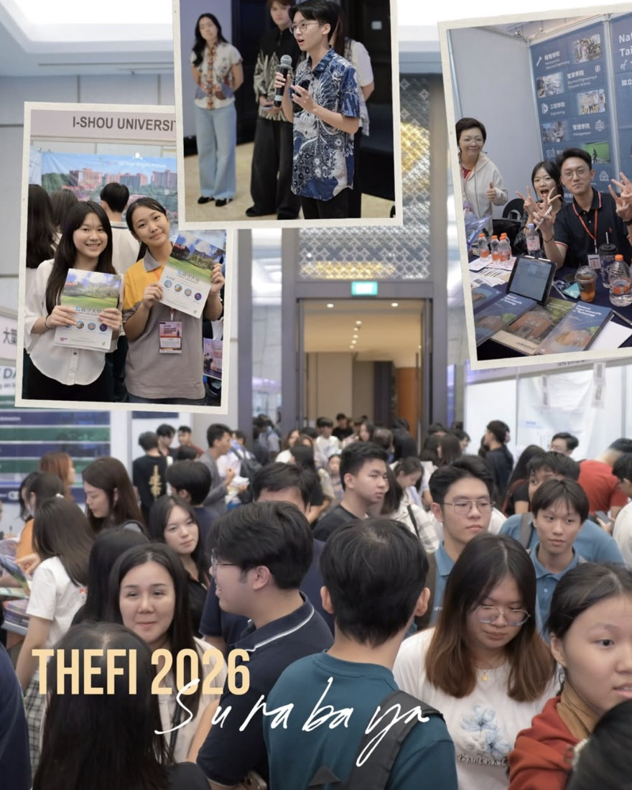

Siapa Kami
Lebih dari sekadar komunitas
ICATI JATIM — Ikatan Citra Alumni Taiwan Jawa Timur Indonesia — berdiri sejak 1987. Kami lahir dari ikatan alumni yang pernah menempuh pendidikan di Taiwan.
Kami bukan agen atau biro jasa. ICATI JATIM adalah perwakilan resmi yang diangkat oleh Pemerintah Taiwan untuk memverifikasi dokumen siswa/mahasiswa berstatus Overseas Chinese, agar dokumen tersebut diakui oleh universitas-universitas di Taiwan.
“Kami di sini untuk membantu, tapi kamu harus siap dan serius.”
Visi & Tujuan
Menjadi jembatan, bukan penghalang
Dari peran yang dipercayakan Pemerintah Taiwan, tujuan kami tumbuh menjadi sesuatu yang lebih luas bagi pelajar Indonesia.
Memastikan dokumen diakui
Memverifikasi dokumen pelajar berstatus Overseas Chinese sesuai syarat resmi Pemerintah Taiwan, agar diterima universitas.
Mendampingi calon mahasiswa
Memberi arah yang jelas bagi pelajar Indonesia yang ingin melanjutkan studi ke Taiwan — dari persiapan hingga pendaftaran.
Menjaga ikatan budaya
Merawat komunitas alumni dan membangun jembatan budaya antara Indonesia dan Taiwan dari generasi ke generasi.
Apa yang Kami Lakukan
Tugas kami dari Pemerintah Taiwan
Secara sederhana, tugas kami adalah memverifikasi dokumen pelajar yang ingin sekolah ke Taiwan dengan status Overseas Chinese.
- Memeriksa dan menstempel dokumen yang dibawa secara fisik ke kantor kami.
- Memastikan dokumenmu diakui oleh universitas di Taiwan.
- Bersikap jujur dan jelas — bukan agen yang menjanjikan apa pun tanpa proses resmi.
- Mendampingi dan mengarahkan calon mahasiswa pada jalur yang benar.
Kegiatan & Layanan
Yang kami selenggarakan
Selain verifikasi dokumen, ICATI JATIM aktif menggelar kegiatan pendidikan, budaya, dan sosial bagi pelajar Indonesia.
Pilar Pendidikan
Pameran pendidikan universitas Taiwan, talkshow beasiswa, workshop Study Plan & Personal Statement, serta rekomendasi tutor Mandarin bersertifikat.
Pilar Budaya
Perayaan festival, lomba bahasa seperti Mandarin Star Fest, serta promosi budaya Taiwan & Tionghoa di Indonesia.
Pilar Sosial
Bakti sosial, donor darah, bantuan bencana, dan pertemuan jaringan alumni ICATI JATIM.
Salah satu kegiatan unggulan kami adalah THEFI (Taiwan Higher Education Fair) — pameran pendidikan tinggi Taiwan yang menghadirkan universitas-universitas Taiwan langsung kepada siswa Indonesia — bersama talkshow beasiswa dan Mandarin Star Fest, festival lomba bahasa Mandarin. Klik poster untuk melihat versi besarnya.

THEFI · Taiwan Higher Education Fair Talkshow Kuliah & Beasiswa Taiwan Mandarin Star Fest 2026Proses Verifikasi
Kenapa perlu distempel ICATI JATIM?
Karena ini syarat resmi dari Pemerintah Taiwan agar dokumenmu diakui oleh universitas. Begini alurnya:
01
Bawa Dokumen Fisik
Bawalah dokumen sekolah & pribadi secara fisik ke Kedungsari 45, Surabaya.
02
Diverifikasi & Distempel
Dokumen diperiksa oleh ICATI JATIM, kemudian distempel sebagai tanda verifikasi.
03
Dokumen Siap
Selesai — dokumenmu siap dipakai untuk mendaftar ke universitas di Taiwan.
Mengapa Taiwan
Sebuah perjalanan yang bermakna
Bagi banyak alumni ICATI JATIM, Taiwan bukan sekadar tempat menempuh pendidikan — ia menjadi babak baru kehidupan: belajar, tumbuh, dan kembali membawa sesuatu bagi komunitas.
Dengan dukungan verifikasi dokumen yang resmi dan jelas, perjalananmu ke Taiwan dimulai dari langkah yang benar sejak awal.
Lihat Info PendaftaranCatatan untuk Kamu
Persiapkan dirimu dari sekarang
Kami di sini untuk membantu — tetapi kesiapanmu adalah bagian terpenting dari perjalanan ini.
Tulis nama Mandarin sendiri
Kamu diharapkan bisa menuliskan nama Mandarin dirimu sendiri.
Tulis nama Mandarin orang tua
Lengkapi juga dengan nama Mandarin kedua orang tuamu.
Kenali asal leluhur / jiguan
Sebutkan asal leluhurmu. Tidak tahu bisa ditolak — jadi siapkan sejak awal.
Siap mental
Tidak bisa ≠ bisa disetrap. Yang penting: berlatih, siap-siap, dan datang dengan sungguh-sungguh.
“Ayo, siapkan dirimu dari sekarang!”
Kontak & Alamat
Mari bertemu langsung
Verifikasi dilakukan secara fisik. Kunjungi kami di alamat berikut.
Alamat & Jam Layanan